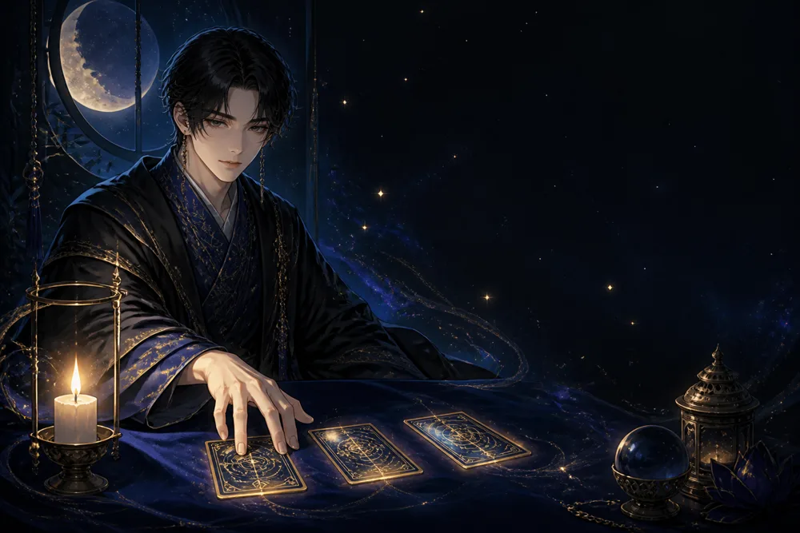
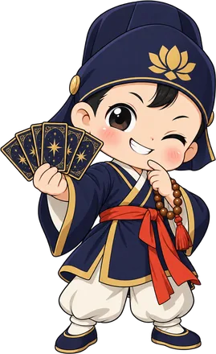
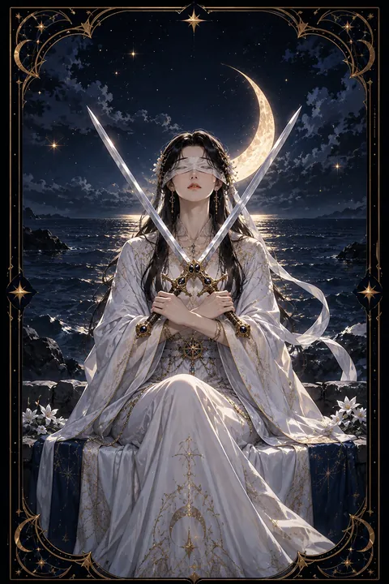

이 게시물은 쿠팡 파트너스 활동의 일환으로, 이에 따른 일정액의 수수료를 제공받습니다.


검 2 카드 — 결정을 미룬 채 멈춘 교착
검 2 카드 한눈에 보기
검 2 카드 상징 읽기

동네보살의 카드 그림은 전통 라이더–웨이트 덱의 뜻을 새 그림으로 옮긴 것입니다. 아래 상징 설명은 전통 덱의 그림을 기준으로 합니다.
흰옷을 입은 여인이 눈가리개를 한 채 돌 의자에 앉아 있습니다. 눈을 가린 것은 보고 싶지 않은 현실을 외면하거나 감정을 배제한 채 판단하려는 태도를 뜻합니다.
가슴 앞에서 엇갈린 두 검은 팽팽하게 맞선 두 가지 선택을 상징합니다. 팔을 교차한 자세는 마음을 닫고 스스로를 방어하는 모습이기도 합니다. 무거운 검을 오래 들고 있을 수 없듯 이 균형은 영원히 유지될 수 없습니다.
등 뒤의 바다는 감정과 무의식을 나타내며 잔잔한 수면 아래 숨은 바위는 드러나지 않은 문제를 가리킵니다. 하늘의 초승달은 직관과 변화의 시작을 뜻하며 머리로만 따지지 말고 속마음의 목소리에도 귀를 기울이라고 말합니다. 여인이 바다를 등지고 앉은 구도는 감정을 뒤로 밀어 둔 채 이성만으로 버티고 있는 상태를 보여 줍니다.
검 2 카드 정방향 뜻
정방향 검 2는 두 갈래 길 앞에서 결정을 미루고 있는 상태를 보여 줍니다. 어느 쪽을 골라도 무언가를 잃을 것 같아 선택 자체를 피하고 있거나 갈등을 마주하기 싫어 마음의 문을 닫아 둔 모습입니다.
겉으로는 평온하고 균형이 잡힌 것처럼 보이지만 속에서는 긴장이 계속 쌓이고 있습니다. 이 카드는 잠시 멈추어 숨을 고르는 것은 괜찮지만 그 멈춤이 길어지면 상황이 대신 결정을 내려 버릴 수 있다고 경고합니다.
지금 필요한 것은 눈가리개를 조금 들어 올리는 일입니다. 두 선택지의 장점과 단점을 나란히 적고 부족한 정보가 무엇인지 확인해 보세요. 완벽한 답을 기다리기보다 스스로 기한을 정해 두는 편이 좋습니다. 작은 결정 하나가 굳어 있던 균형을 움직이는 첫걸음이 됩니다. 정한 기한이 다가오면 그때의 마음을 믿고 한쪽으로 발을 옮기면 됩니다.
검 2 카드 역방향 뜻
역방향 검 2는 억지로 유지하던 균형이 무너지는 모습입니다. 미뤄 둔 선택이 더는 피할 수 없는 순간으로 다가오거나 감춰져 있던 사실이 드러나 결정을 재촉받게 됩니다.
한편으로는 너무 많은 정보와 조언에 휩싸여 오히려 판단이 더 어려워진 상태를 뜻하기도 합니다. 여러 사람의 말 사이에서 흔들리다 보면 원하지 않는 방향으로 끌려갈 위험이 있습니다.
그러나 눈가리개가 벗겨졌다는 것은 적어도 현실을 볼 수 있게 되었다는 의미입니다. 조언은 믿을 만한 한두 사람으로 줄이고 스스로 기준을 세워 보세요. 모든 것을 한 번에 해결하려 하지 말고 가장 작은 결정부터 내리면 긴장이 조금씩 풀립니다. 선택의 주도권을 되찾는 순간 막혀 있던 흐름이 다시 움직이기 시작합니다. 떠밀려 고른 길이라도 그 뒤의 걸음은 스스로 정할 수 있습니다.
연애에서 검 2 카드
솔로라면 마음에 드는 사람이 있어도 먼저 다가가지 못하고 망설이는 시기입니다. 상처받을까 두려워 마음을 숨기고 있다면 작은 관심 표현부터 시작해 보세요. 두 사람 사이에서 고민하고 있다면 조건을 비교하기보다 함께 있을 때 편안한 쪽이 어디인지 떠올려 보는 것이 실마리가 됩니다. 마음이 기우는 쪽은 대개 생각보다 몸이 먼저 알고 있습니다.
곁에 연인이 있다면 갈등을 피하려고 서로 말을 아끼고 있을 가능성이 큽니다. 조용한 평화처럼 보여도 풀리지 않은 문제는 쌓이게 마련입니다. 비난하지 않는 말투로 한 가지 주제만 꺼내 대화를 시작해 보세요. 관계의 방향을 정하는 일을 계속 미루면 상대도 지치게 되니 작은 합의라도 함께 만들어 가는 것이 좋습니다. 오래 미룬 이야기일수록 짧고 부드럽게 시작하는 것이 요령입니다. 대화를 마친 뒤 서로 고마운 점 하나씩 말해 보는 것도 긴장을 푸는 데 좋습니다.
재회·속마음 질문에서 검 2 카드
재회 질문에서 검 2가 나오면 두 사람 모두 마음을 정하지 못한 채 멈춰 있는 상태로 봅니다. 연락하고 싶은 마음과 다시 상처받기 싫은 마음이 팽팽하게 맞서 있습니다. 상대 역시 쉽게 속을 드러내지 않을 가능성이 크니 답을 재촉하기보다 부담 없는 안부 정도로 문을 열어 두는 편이 좋습니다. 무엇보다 스스로가 정말 재회를 원하는지 먼저 확인해야 합니다. 마음이 정리되지 않은 상태에서 다시 만나면 같은 문제가 되풀이될 수 있습니다. 재회를 원한다면 다시 만났을 때 무엇을 다르게 할지 먼저 적어 보세요. 그 목록이 분명할수록 망설임이 줄어들고 상대에게 건넬 말도 또렷해집니다. 뒤집힌 카드라면 미뤄 온 결론이 곧 모습을 드러낼 수 있으니 마음의 준비를 해 두는 것이 좋습니다.
일·금전에서 검 2 카드
일과 직장에서는 두 가지 제안이나 방향 사이에서 결정을 보류하는 상황을 뜻합니다. 이직과 잔류, 두 프로젝트 가운데 하나를 골라야 하는 때일 수 있습니다. 판단을 서두를 필요는 없지만 스스로 기한을 정해 두어야 결정이 끝없이 밀리지 않습니다. 동료 사이의 갈등에 끼어 있다면 섣불리 한쪽 편을 들기보다 사실관계를 먼저 정리해 두는 편이 뒤탈이 없습니다.
재물 흐름을 보면 큰 지출을 앞두고 망설이는 흐름입니다. 필요한 정보를 충분히 모은 뒤 결정하고 확신이 서지 않는 계약은 잠시 보류하는 편이 안전합니다. 비교표를 만들어 숫자로 따져 보면 흔들리던 마음이 한결 가라앉습니다. 결정한 뒤에는 이미 고른 쪽의 장점을 살리는 데 힘을 쏟으세요.
검 2 카드는 예일까 아니오일까
두 선택지 사이에서 아직 마음이 정해지지 않았다는 카드여서 지금 당장은 예도 아니오도 아닌 조건부로 봅니다. 필요한 정보를 확인하고 스스로 선택을 내리는 순간 답이 분명해집니다.
자주 묻는 질문
검 2 카드 역방향은 나쁜 뜻인가요?
역방향 검 2는 억지로 유지하던 균형이 무너지는 모습입니다. 미뤄 둔 선택이 더는 피할 수 없는 순간으로 다가오거나 감춰져 있던 사실이 드러나 결정을 재촉받게 됩니다.
검 2 카드가 연애 질문에 나오면요?
솔로라면 마음에 드는 사람이 있어도 먼저 다가가지 못하고 망설이는 시기입니다. 상처받을까 두려워 마음을 숨기고 있다면 작은 관심 표현부터 시작해 보세요. 두 사람 사이에서 고민하고 있다면 조건을 비교하기보다 함께 있을 때 편안한 쪽이 어디인지 떠올려 보는 것이 실마리가 됩니다. 마음이 기우는 쪽은 대개 생각보다 몸이 먼저 알고 있습니다.
타로 카드는 어떻게 뽑나요?
타로 카드 페이지에서 78장을 섞으면 그중 22장이 펼쳐집니다. 마음이 가는 세 장을 고르면 과거·현재·미래 자리에 놓이고, 한 장씩 뒤집어 자리와 방향에 맞는 풀이를 읽습니다. 정방향과 역방향은 섞는 순간 정해집니다.